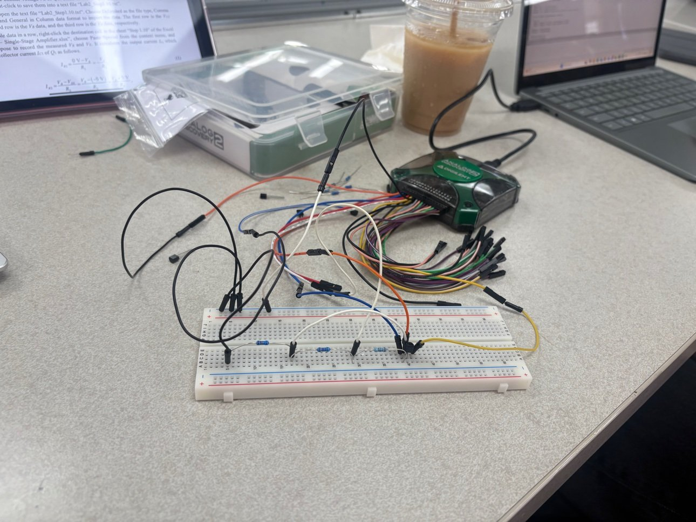
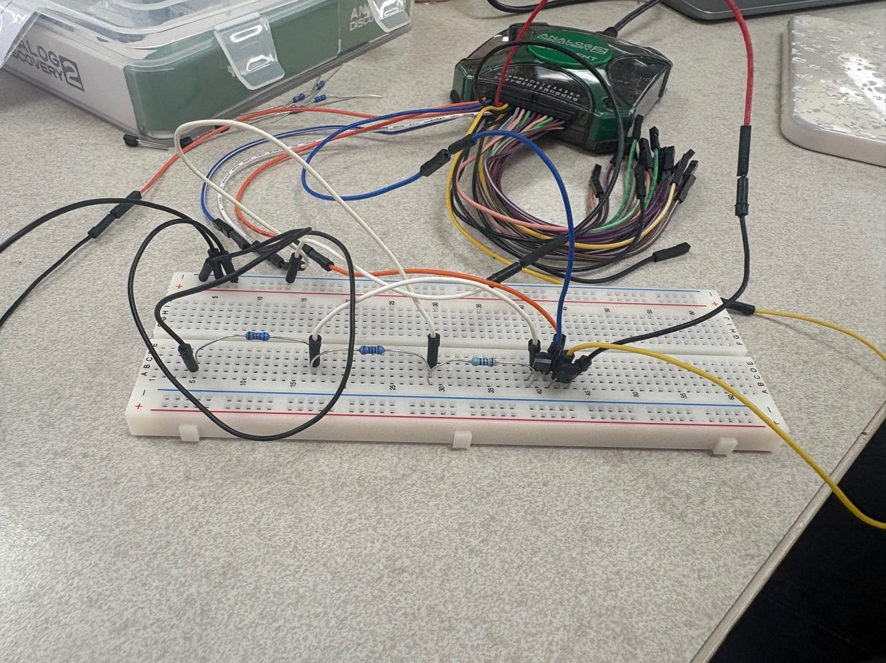

Project
Single-Stage and Differential Amplifiers
Two amplifier builds measured end to end on the bench: a common-emitter stage biased by a current sink, and a differential pair, both characterized with an Analog Discovery 2.
What I did
- Measured the current sink's output characteristic first and found it holds its current with a minimum output voltage of -3 V, which sets the floor for everything built on top of it.
- Took the common-emitter amplifier's DC transfer curve, identified the linear region, and set the operating point inside it. Simulated voltage gain was about 72 dB at 100 Hz; the measured gain was about 61.7 dB, with an upper 3-dB frequency near 14 kHz.
- Measured the differential pair's common-mode input range on the bench, -2.7 V to +4.6 V, and its common-mode gain of roughly -87 dB.
- Measured the pair's differential gain at 19.74 dB with a 3-dB frequency of 8.33 MHz, a gain-bandwidth product near 80 MHz, far wider than the common-emitter stage, and combined the differential and common-mode gains into a CMRR of about 106.5 dB.
Result
Both stages behaved the way the hand analysis predicted: the single-ended stage trades bandwidth for very high gain, while the differential pair gives up gain for bandwidth and rejects common-mode signals by about 106 dB.

